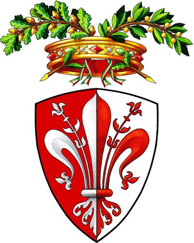

La culla del Rinascimento
Firenze è la capitale della regione Toscana, ed è una delle città più famose al mondo per la sua storia, arte e architettura. È considerata la culla del Rinascimento e il suo centro storico è stato dichiarato Patrimonio dell'Umanità dall'UNESCO. Alcuni dei luoghi più celebri di Firenze sono: Il Duomo (Cattedrale di Santa Maria del Fiore): Una cattedrale imponente con una cupola progettata da Filippo Brunelleschi. La Galleria degli Uffizi: Un museo d'arte di fama mondiale che ospita opere di artisti come Botticelli, Leonardo da Vinci e Michelangelo. Ponte Vecchio: Un ponte medievale sul fiume Arno, famoso per i negozi di gioielli che lo fiancheggiano. Palazzo Pitti: Un grande palazzo che ospita collezioni d'arte, giardini e musei.